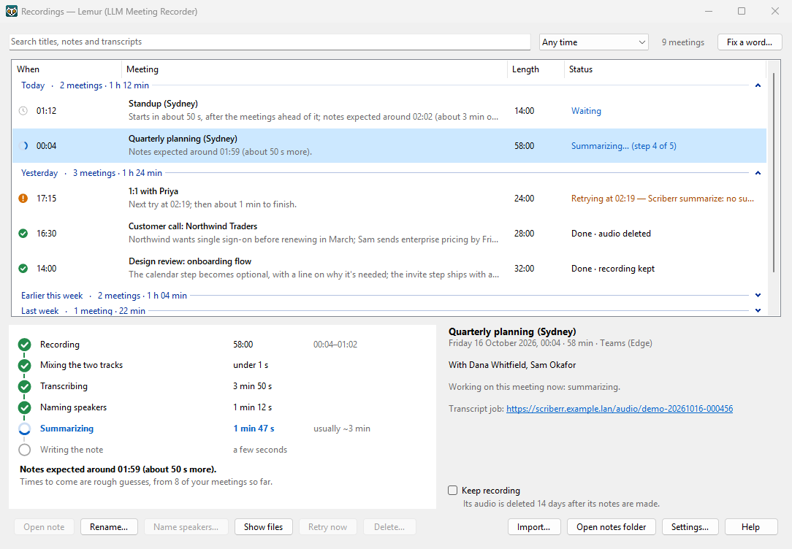

LLMMR "Lemur"
LLM Meeting recorder notes from your own servers
Lemur sits in the Windows system tray and records your calls by itself. When a call ends it turns the recording into a note: a transcript with everyone labelled, and a summary of the action items, decisions and open questions. The speech recognition and the AI that writes the summary run on servers you control, so your meetings never go to a cloud service.

What it does
Records by itself
Starts when a call takes your microphone and stops when it ends: Teams in Edge, Chrome or the Teams app. Google Meet, Zoom (the app or a browser) and GoTo Meeting are built in but not yet tried on real calls. A recording from your phone or another recorder becomes notes too: drop it on the Recordings window, or in a folder Lemur watches.
Knows which voice is you
Your microphone and the call's sound are recorded as two separate, aligned tracks. Comparing them tells Lemur which lines you said.
Writes real notes
A summary, action items with owners, decisions, open questions, and terms worth remembering, followed by the full transcript.
Click a line, hear it
Each note is a Markdown file, a web page and an MP3. On the page, click any line of the transcript to hear it said.
Finds it again
Search every meeting's notes and transcript, and filter by date. Meetings sit under headings (today, last week, each month) you can open and close. Each meeting gets a one-line description, and a title when the call app gave it none.
Names the people
People who introduce themselves ("hi, it's Dana") are named in that meeting's note. If you turn it on, Lemur also learns voices you name, so it recognises them next time.
Stays on your network
Recordings go only to the servers named in your settings. Keys are kept in Windows Credential Manager, never in a file.
Why your own servers
A meeting recording is about as private as data gets: what your colleagues and customers said, in their own voices. Lemur doesn't send it to a cloud service. It sends it to the transcription and AI models you run, on your own hardware or your organisation's. Nothing in the chain needs the internet once the models are downloaded.
The self-hosting guide lists the models, the hardware they need and how to set them up, with measured speeds from a working setup.
How a meeting becomes a note
- Record. Lemur notices a call taking your microphone and starts recording two tracks: your microphone, and what your headset or speakers play.
- Transcribe. When the call ends, a mix of the two goes to your transcription server, which writes down every word and works out who spoke when.
- Name the speakers. The two tracks show which lines are yours. Introductions, and voices you've named before, name the others.
- Summarize. Your own AI model writes the summary, action items and decisions from the labelled transcript.
- Write the note. A Markdown file, a web page and an MP3 land in
Documents\Meeting Notes. A notification tells you they're ready.
On the author's setup, a 48-minute call had its notes 6½ minutes after it ended.
What you need
On your PC
- Windows 10 (version 2004 or later) or Windows 11, 64-bit.
- A microphone and a headset or speakers. Lemur records whichever devices your call uses.
- No administrator rights: Lemur installs just for you.
On your network
- Transcription: Scriberr on a computer with an NVIDIA graphics card.
- Summaries: an AI model behind an OpenAI-compatible API (vLLM, llama.cpp, Ollama…). It needs a graphics card or a machine with lots of unified memory.
- Optional: the small voiceprint service in this project, for recognising voices; LiteLLM, to put everything behind one address with a key per person.
Someone else may already run these for you. Then all you need is their address and your own key, or a
.lemursetup file from them.
Install in three steps
- Run
Lemur-1.2.1.msi. It installs into your own profile, so it doesn't ask for an administrator. Windows may warn that the publisher is unknown: choose More info, then Run anyway. - Let it start Lemur when it finishes. A setup window asks for your server's address and your key, and tests the connection.
- Join a call. The tray icon turns red while it records. Notes appear in
Documents\Meeting Notesa few minutes after the call.
The manual covers each step, upgrading from Teams Recorder (Lemur's earlier name), and uninstalling.
Recording people without telling them can be against the law where you or they are. Some places (for example Illinois and California) need everyone's consent, and your employer may have its own rules. Lemur reminds you each time a recording starts.
Privacy at a glance
- Audio goes to your transcription server, and only to the addresses in your settings.
- The working audio Lemur keeps on your PC is deleted 14 days after the notes are made (you can change this, or tick Keep recording for a meeting you want to hear again). Each note keeps its own MP3 until you delete the note, unless you choose to have it deleted with the audio.
- Keys live in Windows Credential Manager, never in a settings file.
- Voice recognition is off until you turn it on. When it's on, voiceprints of the people you name are kept only in your people folder, and Lemur asks whether they agreed.
- Your transcription server keeps a copy. Scriberr keeps each meeting's audio, transcript and summary until you delete them there.
More in the manual: your data and privacy.
Credits and licences
Lemur builds on these projects and models. Licences are as each project published them when this was written. Check each model's own card or licence before you redistribute it.
| Project or model | Used for | Licence |
|---|---|---|
| NVIDIA Parakeet TDT 0.6B v3 | Speech to text (on your Scriberr server) | CC-BY-4.0 |
| pyannote speaker-diarization-community-1 | Who spoke when (on your Scriberr server) | See its model card on Hugging Face (you accept its conditions to download it) |
| Scriberr | The transcription server | See the Scriberr repository |
| NVIDIA NeMo TitaNet-L, via sherpa-onnx's model release | Voiceprints (optional) | See the model's licence |
| WeSpeaker ResNet34, via sherpa-onnx's model release | An alternative voiceprint model | See the model's licence |
| sherpa-onnx and ONNX Runtime | Running the voiceprint model | Apache-2.0 and MIT |
| LiteLLM | One gateway for the models, with per-person keys | See the LiteLLM repository |
| NAudio | Recording and mixing on the PC | MIT |
| Markdig | Turning notes into web pages | BSD-2-Clause |
| Your summary model (for example Qwen) | Summaries and introductions | Whatever the model you choose says |